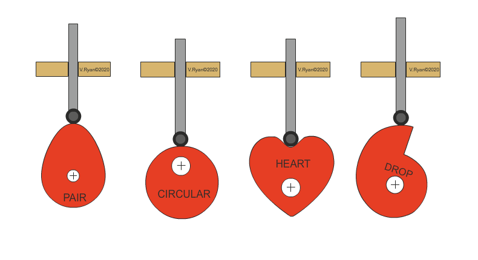
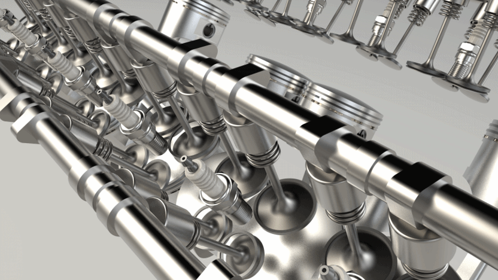
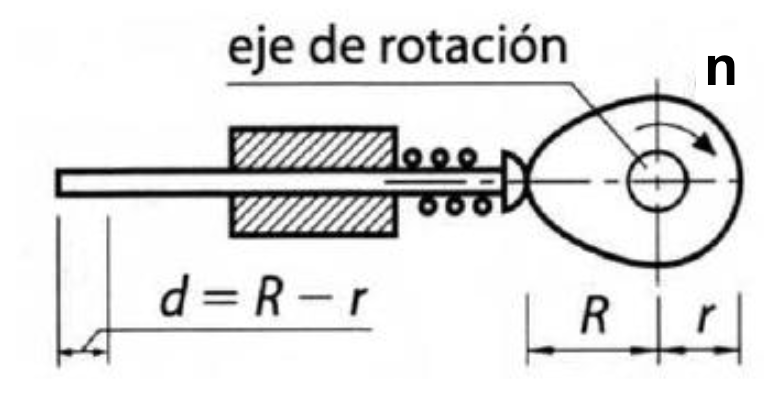
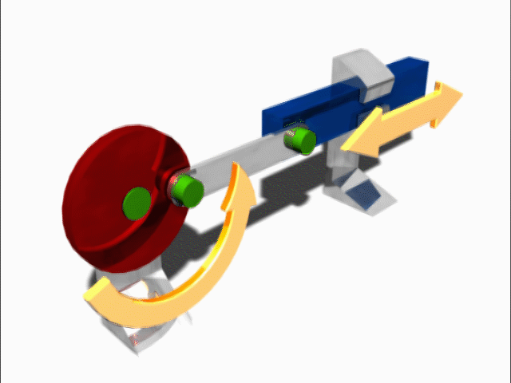
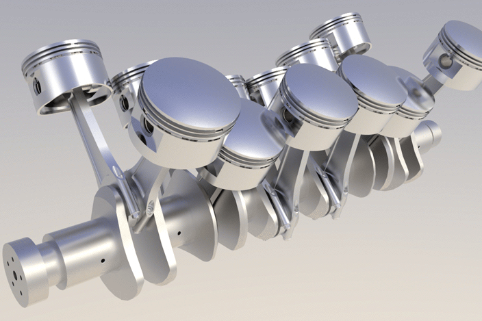

Excéntrica
Transforma el movimiento circular de un árbol en un movimiento alternativo rectilíneo de una pieza llamada seguidor.
Una excéntrica es un disco o cilindro cuyo eje de giro no coincide con su centro geométrico:

La distancia d, entre el centro del disco y el del eje recibe el nombre de excentricidad.
Además de la excentricidad, en una excéntrica se definen dos radios, medidos sobre la línea que une el centro de giro con el centro geométrico de la excéntrica:
- Radio mayor (R): distancia desde el centro de giro hasta el borde más lejano.
- Radio menor (r): distancia desde el centro de giro hasta el borde más cercano.
 Como se puede deducir fácilmente del dibujo anterior, la excentricidad es:
Como se puede deducir fácilmente del dibujo anterior, la excentricidad es:
\[d=\frac{R-r}{2}\]
Este mecanismo es irreversible. Por consiguiente, el elemento motriz siempre será la rueda excéntrica y el elemento conducido el seguidor.
 Las excéntricas producen en el seguidor un suave movimiento continuo, denominado movimiento armónico simple. Como puede comprobarse fácilmente, la amplitud de este movimiento será igual al doble de la excentricidadde la rueda excéntrica.
Las excéntricas producen en el seguidor un suave movimiento continuo, denominado movimiento armónico simple. Como puede comprobarse fácilmente, la amplitud de este movimiento será igual al doble de la excentricidadde la rueda excéntrica.
Leva
La leva es un mecanismo parecido en su concepto a la excéntrica, pero nos permite obtener un movimiento más irregular.
Una leva es una pieza que, en principio, puede tener cualquier geometría. Diseñando la geometría de la leva con cuidado, podemos conseguir un movimiento lineal alternativo con las variaciones de velocidad que queramos:

Un caso especialmente importante de uso de las levas es en la apertura y cierre de válvulas en los motores de combustión interna de cuatro tiempos (se ve con más detalle en 2.º de Bachillerato). En este caso tenemos varias levas que giran en un mismo árbol, por lo que decimos que tenemos un árbol de levas:
En la leva, como en la excéntrica, también se pueden definir dos radios principales, aunque, en esta ocasión, pueden medirse en diferentes direcciones dadas las posibles geometrías de las levas. Se definen como:
- Radio mayor (R): distancia desde el eje de giro al punto de la periferia de la leva más lejano.
- Radio menor (r):distancia desde el eje de giro al punto de la periferia de la leva más cercano.
A partir de estos dos radios, el desplazamiento máximo, o carrera (c), que puede realizar el seguidor en una vuelta de la leva será:
\[c=R-r\]

Biela-manivela
El mecanismo de biela-manivela permite transformar un movimiento circular en otro lineal alternativo y viceversa. Es, por tanto, un mecanismo reversible.
Las partes principales de este mecanismo se muestran en el siguiente esquema:

Si se gira la manivela (que en muchos casos es una rueda), el émbolo se desplaza hacia delante y hacia atrás. Pero también, cuando se empuja o se tira del émbolo adecuadamente, la manivela o rueda gira (reversible).
Desde el punto de vista industrial, estas dos propiedades se aprovechan para fabricar diversas maquinas. Así, tenemos los siguientes ejemplos:
- Transformación del movimiento circular en lineal (manivela-biela-émbolo):el elemento conductor es la rueda (acoplada al eje de un motor) y el conducido, el émbolo. Fijo al émbolo, o en su lugar, se coloca el elemento funcional de la máquina. Ejemplos típicos de esta aplicación son las sierras de calar (se transforma el movimiento circular del motor eléctrico en un movimiento alternativo de la sierra) o algunos compresores de aire.

- Transformación del movimiento lineal en circular (pistón-biela-cigüeñal):esta posibilidad se usa habitualmente en los motores de combustión interna. Al producirse la explosión en el cilindro, debida a la quema de un hidrocarburo (gasolina, gasóleo, queroseno, etc.) mezclado con oxígeno, el pistón se desplaza y provoca un giro de 180° en la manivela. El resto de giro se puede completar por la inercia del sistema, aunque normalmente se utilizan varios cilindros para que siempre haya alguno "empujando". En este caso, todas las manivelas están en un mismo árbol que se denomina cigüeñal.

Del mecanismo biela-manivela lo que se calcula es el recorrido del émbolo, que se llama carrera. El extremo de la manivela describe una circunferencia de radio r, así que el émbolo va desde el punto más alejado hasta el más cercano, es decir, un diámetro completo:
\[c=2\cdot r\]
Donde:
- c: carrera del émbolo, en las mismas unidades que r
- r: radio de la manivela (la distancia del eje de giro al punto donde se articula la biela)
Fíjate en que la longitud de la biela no aparece: la carrera solo depende de la manivela. La biela decide dónde queda el émbolo respecto del eje de giro y cómo de suave es el movimiento, pero no cuánto recorre. Y además, cada vuelta completa de la manivela son dos recorridos del émbolo: uno de ida y otro de vuelta.
Ejercicios de mecanismos de transformación circular-alternativo
Verdadero o falso
Excéntrica, leva y biela-manivela. Decide si cada afirmación es verdadera o falsa: casi todas hablan de qué medida decide el recorrido del elemento de salida.
00:00: